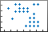

spy
Visualize sparsity pattern of matrix
- 
Description
spy( plots the sparsity pattern of matrix
S)S. Nonzero values are colored while zero values are white. The plot
displays the number of nonzeros in the matrix, nz = nnz(S).
spy(___, specifies
MarkerSize)MarkerSize to give the size of the markers using either of the previous
input argument combinations.
Examples
Plot the 60-by-60 sparse adjacency matrix of the connectivity graph of the Buckminster Fuller geodesic dome. This matrix also represents the carbon-60 molecule and a soccer ball.
B = bucky; spy(B)

Specify the color and marker.
spy(B,'ro')
Also specify the marker size.
spy(B,'ro',2)
Input Arguments
Input matrix. S is typically a sparse matrix, but can be either
full or sparse.
Data Types: single | double | int8 | int16 | int32 | int64 | uint8 | uint16 | uint32 | uint64 | logical
Complex Number Support: Yes
Size of markers, specified as a positive integer scalar.
Example: spy(A,3) uses markers of size 3.
Marker symbol and color, specified as a character vector or string containing symbols. The symbols can appear in any order. You do not need to specify both characteristics (marker and color). For example, if you omit the color and specify the marker, then the plot uses the default colors but uses the specified markers.
Example: 'or' uses red circle markers.
| Marker | Description | Resulting Marker |
|---|---|---|
"o" | Circle |
|
"+" | Plus sign |
|
"*" | Asterisk |
|
"." | Point |
|
"x" | Cross |
|
"_" | Horizontal line |
|
"|" | Vertical line |
|
"square" | Square |
|
"diamond" | Diamond |
|
"^" | Upward-pointing triangle |
|
"v" | Downward-pointing triangle |
|
">" | Right-pointing triangle |
|
"<" | Left-pointing triangle |
|
"pentagram" | Pentagram |
|
"hexagram" | Hexagram |
|
| Color Name | Short Name | Appearance |
|---|---|---|
'red' | 'r' |
|
'green' | 'g' |
|
'blue' | 'b' |
|
'cyan'
| 'c' |
|
'magenta' | 'm' |
|
'yellow' | 'y' |
|
'black' | 'k' |
|
'white' | 'w' |
|
Tips
format +is a text-based alternative for displaying the nonzero structure of a small matrix:format + eye(4)ans = + + + +